Reversing ELF - TryHackMe
Introduction
This write-up covers the Reversing ELF challenge from TryHackMe, which consists of 8 ELF crackme binaries. Time to roll up our sleeves and start reversing.
Crackme1
After opening the binary in IDA, the first notable observation is the allocation of a buffer containing encrypted character data.
This buffer appears to store obfuscated strings that are later decrypted at runtime. Subsequently, a call to memset is performed,
which overwrites 27 bytes of the allocated buffer with the character A (0x41).
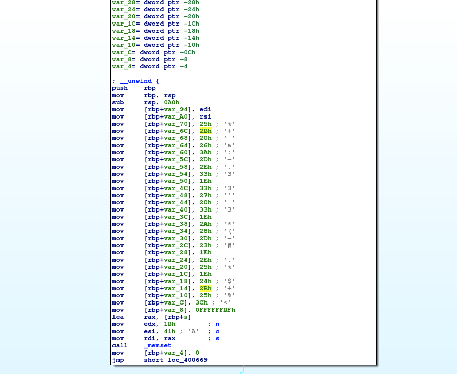
Next, a loop iterates over the encrypted array 26 times (as indicated by the comparison cmp eax, 1Ah). During each iteration, the data is progressively
processed to recover the original content. Once the loop completes, the resulting decrypted string is printed to standard output using the puts function.
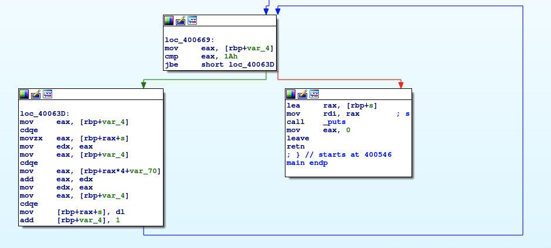
Therefore, by executing the program within IDA and placing a breakpoint on the puts function, it is possible to inspect the contents of the
rax register at runtime and directly observe the decrypted string in cleartext. Alternatively, simply running the binary from
the terminal is sufficient to display the decrypted string, as it is printed to standard output.

Crackme2
In this second scenario, as shown in the figure below, the program first performs a comparison between the value pointed to by eax and 2.
This indicates that the program expects one command-line argument; if this condition is not met, it prints the message Usage: %s password and
terminates. This behavior confirms that the program requires a password as the second command-line parameter, although the correct value is not immediately known.

Analysis then focuses on the right execution branch, where the password string is retrieved from the .rodata section and compared against
the user-supplied input stored in eax. If the comparison succeeds, 0 is stored in eax, and execution proceeds
to the right branch, where the message "Access granted" is displayed. Otherwise, execution follows the left branch, resulting in the message
"Access denied".
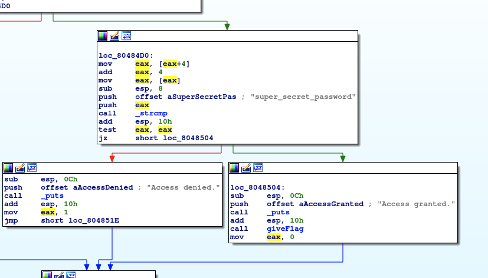
In conclusion, it can be stated with certainty that the correct password is the one stored in the .rodata section, as illustrated in the figure below.

By executing the program and providing the extracted password, the flag is successfully obtained.
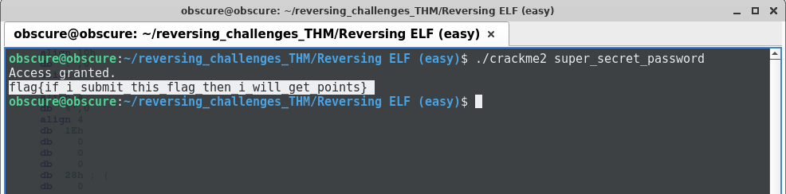
Crackme3
The program first performs the same comparison observed previously, confirming that it expects a password to be provided as a command-line parameter before proceeding
with execution.

Following the right execution branch, several operations are performed. The user input string, stored in edi, is retrieved, and memory is
allocated using malloc based on the length of the input. If the memory allocation succeeds, execution continues into the left branch,
where strlen is invoked twice. Before the second strlen call, the function sub_80486B0 is executed.
This subroutine applies an encryption routine to the input string. The encrypted string is then passed to the second strlen, which computes its length.
If the resulting length is not equal to 64 bytes (0x40 in hexadecimal), execution follows the right branch and the program prints the message:
“Come on, even my aunt Mildred got this one!”.

If the length check succeeds, execution continues along the left branch. As illustrated in the figure below, this branch references a string stored in the
.rodata section at address 0x08048E8B. This string appears to be encrypted. The program then calls
strcmp, comparing the encrypted user input (stored in esi) with this encrypted reference string.
If the comparison returns 0, indicating that the two strings are equal, execution proceeds to the branch, where a call to puts
prints the message “Correct password!”.
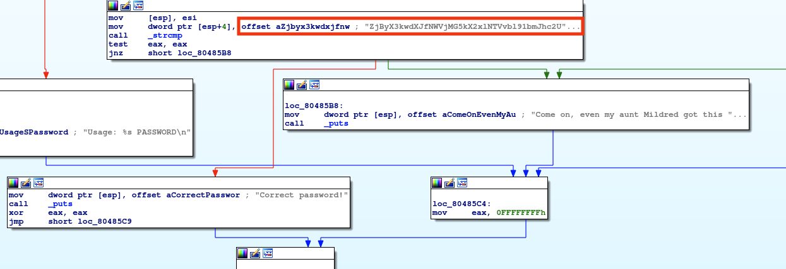
At this point, the only remaining step is to decrypt the string stored in the .rodata section. It can be immediately observed that this
string is Base64-encoded. By decoding it using a tool such as CyberChef, the original value is recovered, which corresponds to both the correct password
and the flag (The decoded string must then be wrapped in the format flag{}, producing the final flag value).

Crackme4
In the fourth scenario, the initial behavior remains the same: the program expects a user parameter as input, which is treated as the password.
If an input string is provided, execution follows the right branch and reaches the function compare_pwd, where the password
validation logic is implemented.
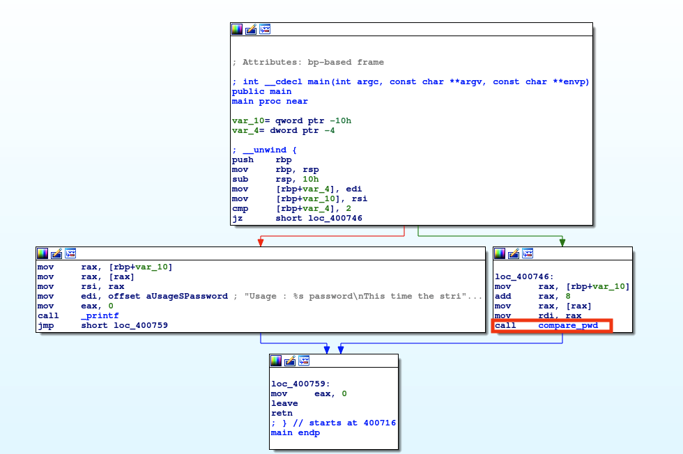
The figure below shows the compare_pwd function. In this case, the password string is more hidden compared to the previous three samples.
In the first two scenarios, the password was stored in cleartext, while in the third scenario it was encoded but still directly visible in memory.
In contrast, this sample does not expose the password in an immediately readable form. The function also invokes get_pwd, which is analyzed at a
later stage, and uses strcmp to compare the user input with the password embedded within the program, determining whether the two values match.
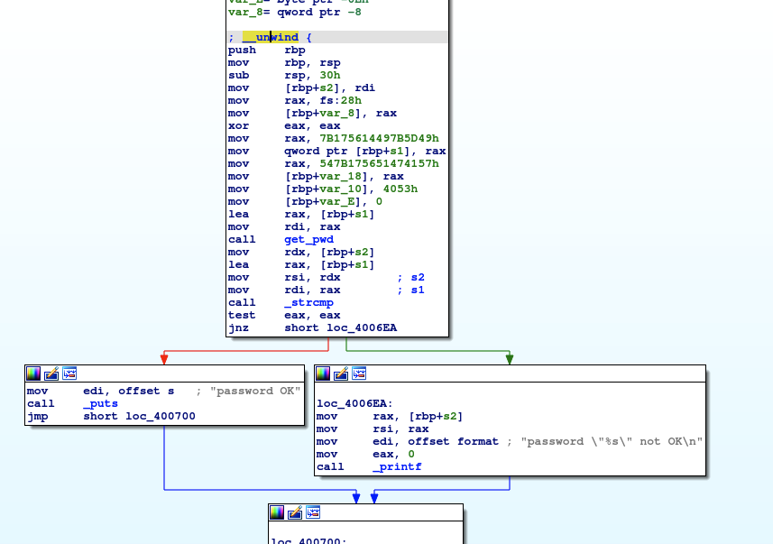
Several operations are performed within this function. First, 48 bytes (0x30) are allocated on the stack. The value contained in the
rdi register is then saved on the stack at [RBP+s2]. Next, the user input stored in the
RAX register is moved onto the stack at rbp+s1. So this means that s1 = user_input
and s2 = encrypted_password. The function then initializes a sequence of constants directly on the stack. Specifically, the value
7B175614497B5D49h is moved into rax and stored on the stack, followed by 547B175651474157h,
then 0x4053, and finally a terminating 0x0 value. These instructions allow the reconstruction of the encrypted password.
It is important to note that these values are written to memory using little-endian format, meaning that the byte order is reversed in memory. For example, the value
0x7B175614497B5D49 is stored as 49 5D 7B 49 14 56 17 7B in memory. The same byte-order reversal applies to
the remaining constants.

Execution then reaches the get_pwd function. Within this function, a loop is implemented in which the encrypted password stored at
rbp+var_18 is processed one byte at a time. Each byte is XORed with the value 0x24, which acts as
the decryption key. This operation effectively decrypts the password at runtime before it is used in the subsequent comparison.
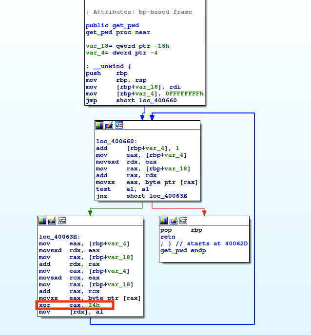
At this point, the previously reconstructed encrypted password can be XORed with the key 0x24. By applying this operation using a
tool such as CyberChef, the decrypted password is recovered, as shown in the figure below.

Crackme5
In the fifth scenario, the program prompts the user to provide an input. When attempting to enter the word test, the program prints the message
"Always dig deeper". As in the previous scenarios, this behavior indicates that the program expects a specific correct input in order to proceed further.

By analyzing the binary in IDA, it is possible to observe that 0x70 bytes of stack space are allocated.
Subsequently, the figure below shows a sequence of characters is stored on the stack, which clearly corresponds to a character array with a size of 28 bytes.

The program then calls puts and subsequently invokes scanf to store the user input. The address where the input is saved is initially held in the
rax register. After that, the address ebp+var_30 is loaded into rdx,
which corresponds to the first byte, that is the first character, of the character array allocated earlier. This value is then moved into rsi.
The user input is stored in ebp+var_50, then moved into the rdx register, and finally
strcmp is invoked to compare the two strings.
If the strings match, strcmp returns 0 and the program prints “Good game” otherwise it prints
“Always dig deeper”.
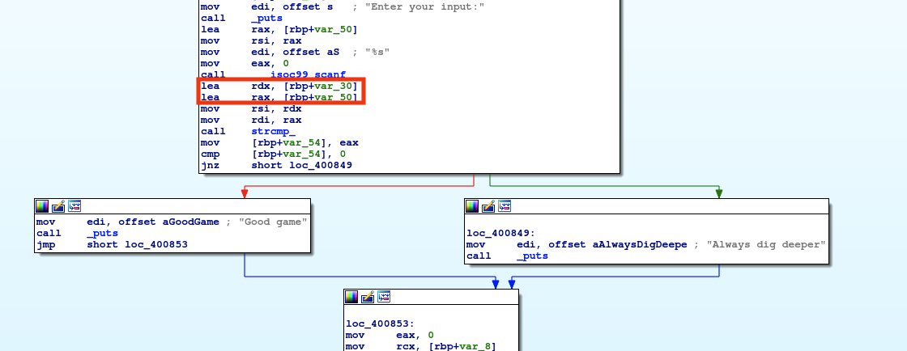
As can be observed, in this scenario there are no deobfuscation or decryption operations involved. The string stored in the array is compared directly, as is, with the user input.
Therefore, it is sufficient to extract this string and provide it as input to the program in order to solve the challenge.

Crackme6
Scenario 6 is initially similar to scenario 4. In this case as well, the program expects an input from the user; if no input is provided, it prints the message
“Usage : %s password', Good luck, read the source”.
If the input is provided, it is stored on the stack at rbp+var_10, the execution flows to the right branch, and the function
compare_pwd is then invoked.
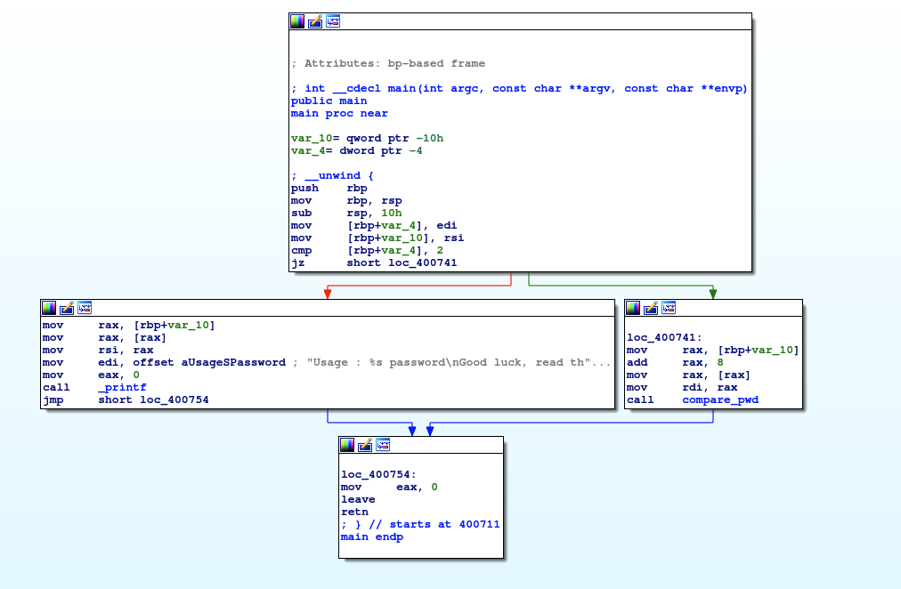
Within the compare_pwd function, the user input stored in rdi is passed as an argument to the
my_secure_test function, as shown in the figure below.

Inside the my_secure_test function, a cascade of if conditions is used to compare different parts of the input string.
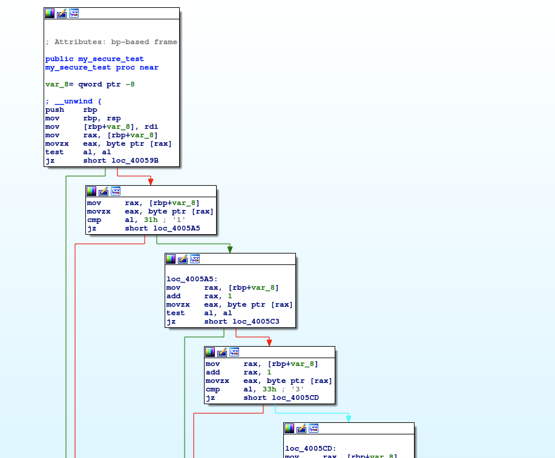
Let’s examine the first two blocks, corresponding to the first two if statements, as shown in the figure below. In the first
if, the input string stored at ebp+var_8 is moved into rax.
The first byte of the string, stored in the al register, is then compared with 0x31.
If the comparison succeeds, the program jumps to the second if.
The first two instructions in this second if increment rax by 1 to point to the second byte (the second character) of the string.
These operations, observed in these first two if statements, are repeated for all subsequent if conditions.